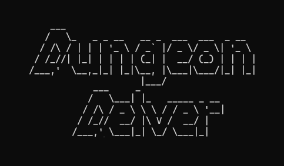
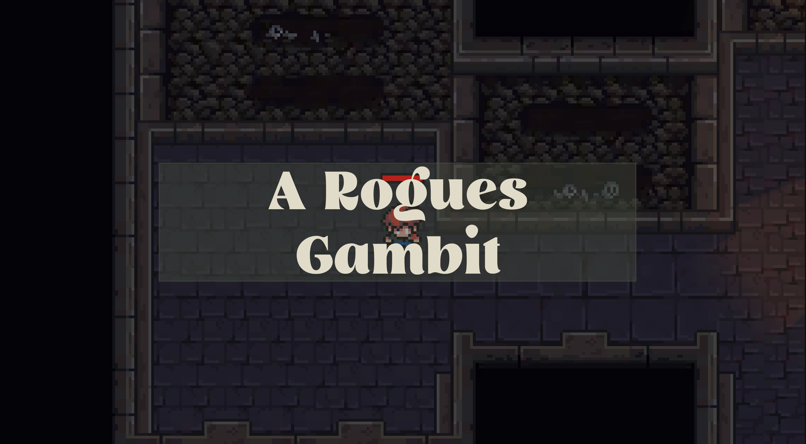
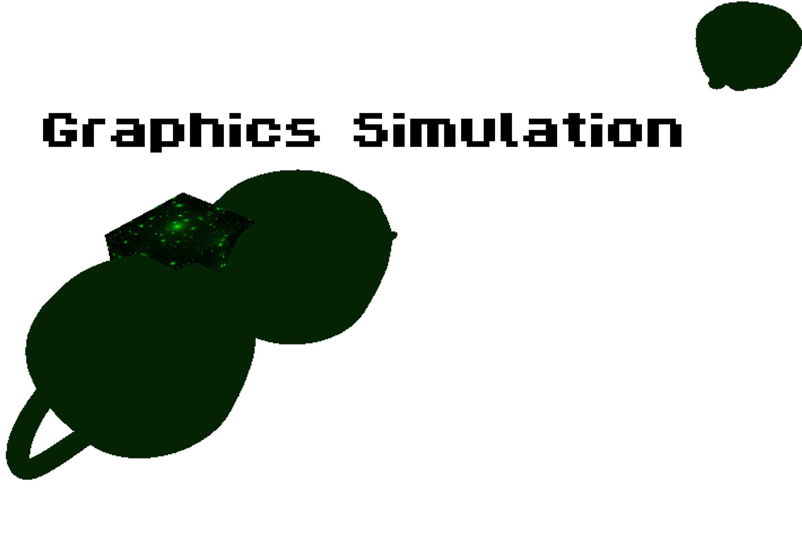

This was my first ever project for university, a text based
dungeon crawler, an overview of the features:

This was one of my first games made using a games engine
- unity in this case. I wanted to use raytracing as a
focal point throughout the game:

Made in my final semester of my first year this project really
sparked an interest in me, working on optimisation as well as
the low level fixed pipeline really worked.
This simulation covers a range of major OpenGL techniques:
I am a games programmer starting my second year at Staffordshire University studying Games Programming, I recently
enjoyed trying graphics programming with OpenGL but would also like to further explore
AI programming. I have also really enjoyed testing out path finding algorithms and using them for more tasks
such as maze generation (Dungeon Delver) and would like to explore this more.
I have just finished my first year at Staffordshire University studying Games Programming, after my second year
I am hoping to do a years industry placement to then finish my degree in 2029.
I finished my first year with an overall first.
My main focus in sixth form was my Computer Science A-Level for which I received a C, my project was coded in python
using PyGame as the main library, I created a random 2D maze generator
that you could test your time against
or watch how various path finding algorithms worked through the maze.
I also did Maths & Physics receiving a D & E respectively.